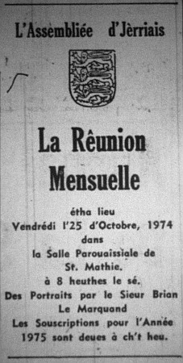

L'Assembliée d'Jèrriais
Des portraits sus l'Australie et la Nouvelle Zélande

RÊUNION MENSUELLE
Vendrédi, l'25 d'octobre, dans la Salle Pârouaissiale dé Ste. Mathie pâssant huiptante membres lus y rêunitent pour vaie des portraits à Moussieu Bryan Le Marquand.
Lé rapport dé la dreine rêunion fut liu et accepté. Moussieu P. E. Le Cuirot fut êlu coumme nouvieau membre. Les affaithes finies, lé Président W. J. Tomes mînt lé restant d'la séthée dans les mains à Moussieu Le Marquand qui c'menchit par montrer des portraits sus l'Australie, c'menchant au Port de Fremantle et la ville de Perth dans l'ouêst d'Australie. Dé d'là à Melbourne et les mangnifiques gardîns et lé Monument d'Dgèrre. Melbourne a bein des bouais d'origine d'Angliétèrre et probabliément iun des meilleurs gardîns à flieurs et bouais au Monde. D'ichin, un viage dé quatre jours à travers les Montagnes de Né dé d'iou qu'des milles de tèrre întchulte est arrosée. À la fin des quatre jours, à Canberra, la capitale d'Australie. Ch'est eune bein moderne cité et j'vîmes dé bieaux gardîns et les Maisons dé Parlément et lé Monument d'Dgèrre et lé Musée de Canberra. Ch'tait qu'un court viage à Sydney, la pus grand' ville d'Australie. Sydney est hardi moderne et j'vîmes lé fameux Pont d'Sydney et la Mênag'gie. Nout' préchaine pliaiche d'arrét était Wellington en Nouvelle Zélande. Ichin j'fûmes montrés des veues d'la ville du Victoria Peak, et tout prés est la ville dé Marterton iou qu'vînmes eune dêmonstration à êtendre l'engrais par avion; étout les brébis à être tondues. D'ichin, à Rotorua pour vaie lé mangnifique Geiser qu'êcopie d'ieau caude et la feunmée à eune hauteur de 60 pids. Les sources bouoillantes et les lacs qui feunment faîsant eune mèrveilleuse veue încriyabl'ye. Nout' préchain arrêt êtait Waitangi, iou qué lé traité dé paix finissant la dgèrre des Maoris fut signé.

Lé bliu dé la mé dans la Baie des Îles dait être veu pour être apprécié, et finnalement la fèrme appartènant à l'oncl'ye à Moussieu Le Marquand qui d'meuthe à Francheville, Moussieu Alec Picot, était eune bouanne fîn ès portraits qu'intéréssîtent touos les membres.
Moussieu Le Marquand r'chut d'grands applaudiss'ments bein méthités pour les mangnifiques portraits si bein prîns.
Lé Conmite Exétchutif sèrvit les rafraîchiss'ments.
Lé Président fit les annonces coumme suivant: Vendrédi, l'29 dé novembre, un Jeu d'Cartes dans la Salle Pârouaissiale dé St. Louothains à 8 heuthes lé sé; sanm'di, l'14 dé décembre, lé Sêrvice dé Noué à Êbenhêzer à 7 heuthes et d'mie. Les pratiques au dinmanche arlévée à 3 heuthes.
Lé Président èrmercyit Moussieu Le Marquand pour les portraits, lé Connêtablye pour la Salle et lé Conmité pour lé souper.
Viyiz étout: